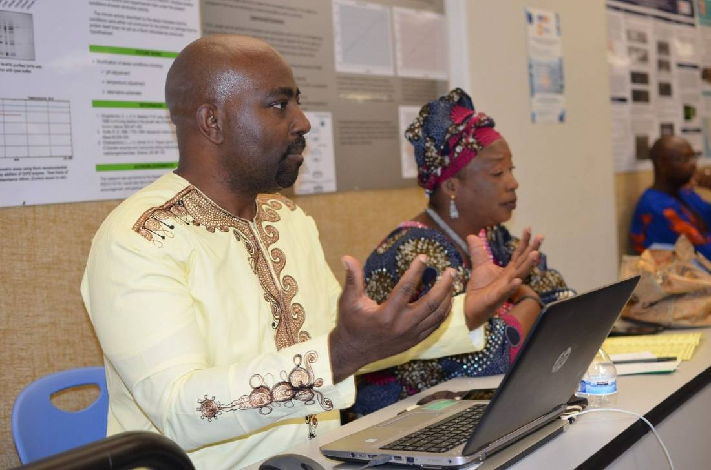
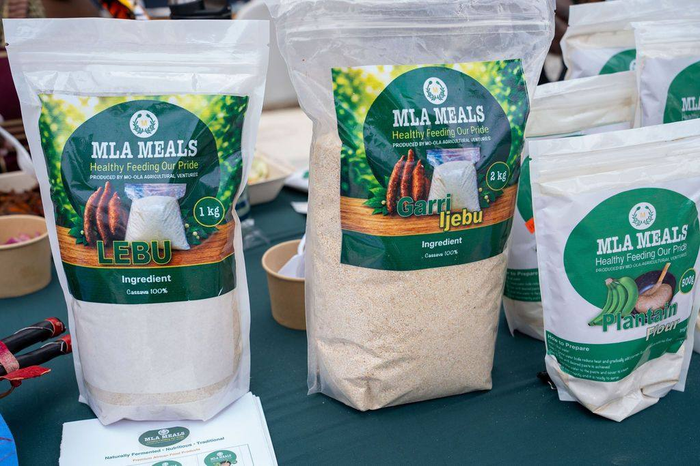

Yoruba Cultural Collective
Culture put to work. A monthly circle of members who meet, host events through the year, and run two member-led projects, the Solar Hub and Green Goods.
Why culture and sustainability sit together
The Collective is about thirty members: engineers, growers, traders, and teachers, who meet monthly. It exists because the two things this community worries about, losing the language and losing the ground under its feet, turned out to be one worry.
Yoruba life never separated the farm from the market from the shrine. Putting solar on a community roof and teaching a child to greet an elder properly are the same work: keeping ourselves, here, without asking permission.
 [ The Collective at work, future photo ]
[ The Collective at work, future photo ]Collective events
Talks, workshops, and site visits through the year. Everyone is welcome.
Monthly circle: solar site walk
Members and guests walk the second Solar Hub site and hear what the install taught us.
Black soap and shea: a Green Goods workshop
Hands-on, materials provided. Twelve places, members first.
Monthly circle: planning 2027
What the Collective takes on next year, decided by the people who will do it.
Solar Hub
Rooftop solar and battery storage on community buildings in South Los Angeles, installed by members who are trained on the job. Two sites are live.

Green Goods
Household goods made without plastic: soap, black soap, shea butter, and cloth bags, sourced through Yoruba producers. It launches at the market at Odunde 2027, and proceeds return to the Collective.

Our grandparents did not separate the farm from the shrine from the market. Putting solar on a community roof is the same work as teaching a child to greet an elder properly. It is all keeping ourselves.
Build with the Collective
The projects above are led by members and open to any member who wants in. Three ways to join them.
Partner or fund a project
Organizations, funders, and civic partners. Four questions and we send the deck.
Bring a skill
Engineering, supply, permitting, and design. Tell us what you can do and we will find where it fits.
Follow the Collective
Collective news goes out with our newsletter, once or twice a month.